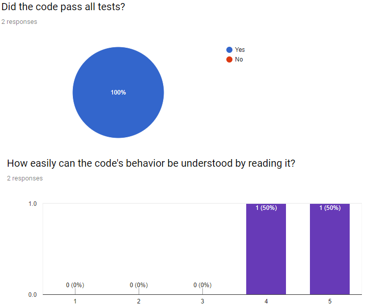

QUALITY MATTERS !!!
by OpenFOSSGideon Nyamachere |
Jonathan Grant |
 Said Robley |
 Tell Hause |
HOW DID WE COME UP WITH QUALITY METRICS
- Reviewing the artifacts created:
- OpenMRS
- Team work
- Ensuring we made artifacts that are:
- Tangible
- Can stand-alone
- Stakeholder can buy into
- Which metrics do we use:
- Functional Metrics
- Non-Functional Metrics
Gideon Nyamachere
HOW WE TURNED QUALITY INTO A COMPARABLE METRIC
- Creating a flexible scale for metrics
- Binary
- Discrete linear scale
- Easily Comparable Metrics
- Can compare apples to oranges
- Can perform analysis easily
- Implementation: Google Forms
- Variety of scales
- Easy to share
- Semi-automated Analysis

Jonathan Grant
MAKING A QUALITY QUESTIONNAIRE
- We wanted the questionnaire to be automated
- Needed to be general enough for many types of artifacts
- We desired it to be easily distributable
- We wanted the questionnaire to be easily adopted by stakeholders
https://www.shutterstock.com/g/nationkp
Tell Hause
LESSONS LEARNT
- Respect the time respondents take:
- Tried it with assessing our second presentation
- Time to launch, fill in and return: approx. 5 mins
- Make the Task Repeatable:
- Use a template
- Automate it
- Keep It Simple Stupid:
- Keep the questionnaire short
- Use only meaningful questions
- Make the output easy to aggregate
Said Robley